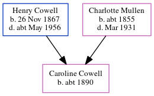

Lilly Clara Mace (née Cowell) 1891 - c1984
[ Home ] | [ Calendar ] | [ Surnames Index ] | [ Errors ] | [ Family History ]A daily cook and the child of Henry Cowell (a shepherd) and Charlotte Mullen, Lilly Cowell, the second cousin twice-removed on the mother's side of Nigel Horne, was born in East Malling, Kent, England on 29 Mar 18911,2,3,4,5 and baptised there at St James the Great Church, 2 The Grange on 17 May 1891. She married Pharoah Mace in Malling, Kent, England around Aug 19246.
During her life, she was living on Lunsford Lane in East Malling on 5 Apr 18917; in Larkfield, Kent, England on 31 Mar 19018; at 100 Elmbourne Road, Wandsworth, London, England on 2 Apr 19119; and at Church Walk in East Malling on 29 Sept 19392 - less than a mile from her father Henry John who was living at 3 Illogan Terrace in Larkfield.
She died c. Feb 1984 in Maidstone, Kent, England3.
Parents
- Henry John was born on 26 Nov 1867
- Charlotte was born c. 1855
Citations
- 1891 England Census Online publication - Provo, UT, USA: The Generations Network, Inc., 2005.Original data - Census Returns of England and Wales, 1891. Kew, Surrey, England: The National Archives of the UK (TNA): Public Record Office (PRO), 1891. Data imaged from The National
- 1939 Register - Findmypast (was recorded at this address)
- England & Wales deaths 1837-2007 - Findmypast
- England Births & Baptisms 1538-1975 - Findmypast
- Kent Baptisms - Findmypast
- England & Wales Marriages 1837-2005 - Findmypast
- 1891 England, Wales & Scotland Census - Findmypast (was age 0 and the daughter of the head of the household)
- 1901 England, Wales & Scotland Census - Findmypast (was age 10 and the daughter of the head of the household)
- 1911 Census for England & Wales - Findmypast (was age 20 and a servant in the household)
Media
1891 England, Wales & Scotland Census - GBC/1891/0005472922
England & Wales marriages 1837-2008 - BMD/M/1924/3/AZ/000272/090
England & Wales deaths 1837-2007 - BMD/D/1984/1/74471726
England Births & Baptisms 1538-1975 - R_885449678
Kent Baptisms - GBPRS/B/82130172/1
England & Wales births 1837-2006 - BMD/B/1891/2/AZ/000135/349
England Births & Baptisms 1538-1975 - R_938206371
1901 England, Wales & Scotland Census - GBC-1901-0006113675
1911 Census For England & Wales - GBC-1911-RG14-02292-0317-7
1939 Register Transcription - TNA-R39-1831-1831B-024-27
Kent Baptisms - PRS/KENT/BAP/0378672
Family Tree
Map
Generated by ged2site. Last updated on Jul 3, 2024
Known Issues
May have been living with mother on 31 Mar 1901, but the addresses don't match or aren't detailed enough to be sure
May have been living with father on 31 Mar 1901, but the addresses don't match or aren't detailed enough to be sure
Listed in the residence for 29 Sep 1939, but spouse Pharoah Mace is not